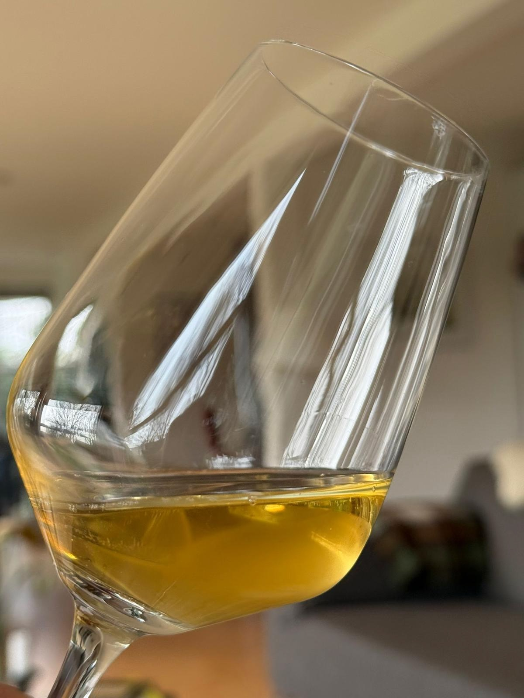
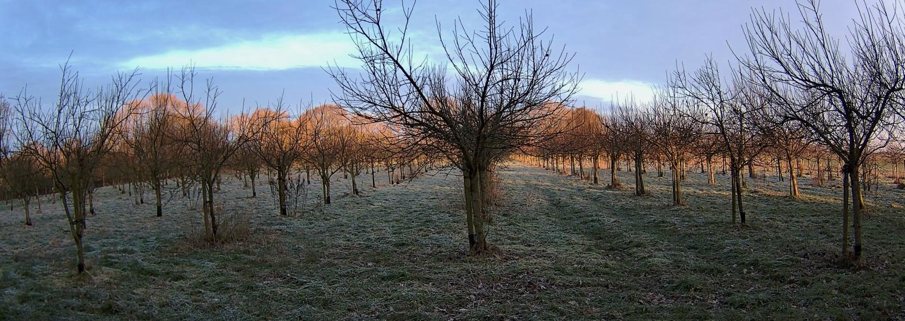
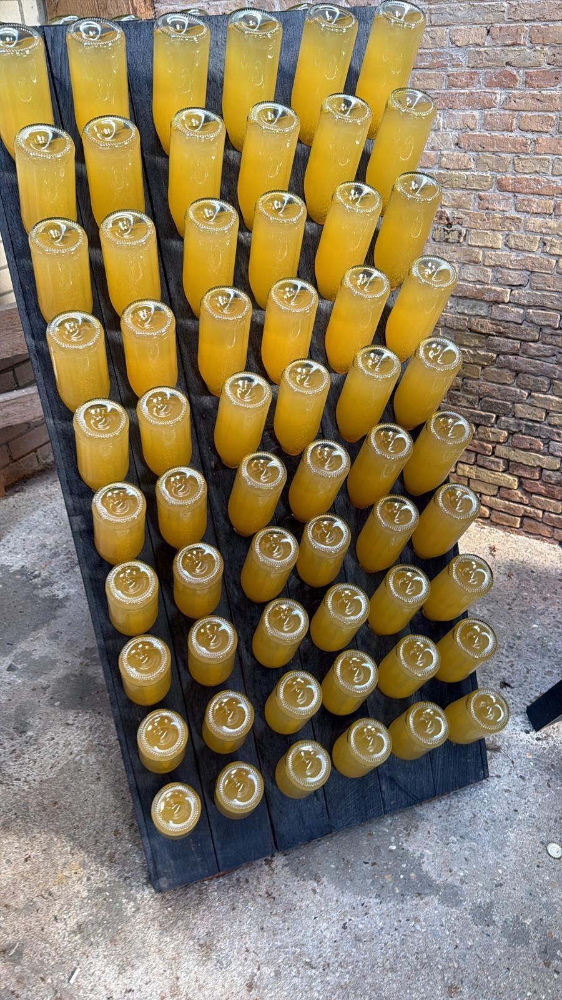

Geduld, traditie en de kracht van de natuur.
Bij Wijnmakerij Maurits van Dinckelaar geloven we in minimale interventie. Onze cider ontstaat door wilde vergisting van oude Friese appelrassen. Geen toegevoegde suikers, geen haast.
Het resultaat is een eerlijke, droge cider die de ziel van het Friese landschap weerspiegelt.


De perfecte balans tussen fruitigheid en de karakteristieke zuren.


De naam Maurits van Dinckelaar voert terug naar de 17e eeuw. Als officier bij de Friesche Garde diende hij de Friese Nassau's in Leeuwarden. Diezelfde standvastigheid en trots vormen de basis voor onze wijnmakerij.

Naast appels werken we met mispels en peren om unieke smaakprofielen te creëren die nergens anders te vinden zijn.

Onze ciders rusten langdurig op hun eigen gist ('sur lie') voor een verfijnde mousse en diepgang.

Elke fles is genummerd en vertelt het verhaal van het oogstjaar. Ongefilterd en vol leven.